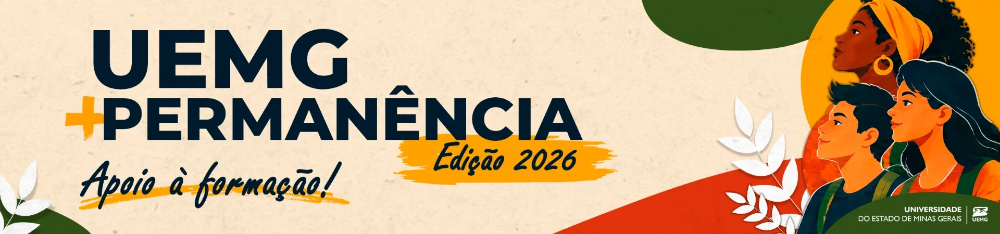

UEMG + Permanência Apoio à Formação
Um auxílio extra de R$ 500,00, pago de uma vez, para quem já teve benefício deferido no PEAES. Não tem nova análise socioeconômica nem documentos para mandar de novo: basta fazer a adesão pelo formulário até 11/11.
Adesão aberta até 11 de novembro
Isto não é o PEAES Veteranos 2027. São duas coisas diferentes, e uma não substitui a outra. O UEMG + Permanência é um valor extra, só de 2026. Quem quer receber auxílio em 2027 precisa se inscrever também no PEAES Veteranos 2027, até 16/11.
Quem pode participar
É preciso cumprir as três condições ao mesmo tempo:
Em curso de graduação presencial (ou de pós-graduação stricto sensu) da UEMG, no momento da adesão. Em Guanhães: Direito e Engenharia Civil.
Em pelo menos um destes processos seletivos:
- Edital nº 04/2024, PEAES Veteranos, para 2025
- Edital nº 01/2025, PEAES Calouros, para 2025
- Edital nº 05/2025, PEAES Veteranos, para 2026
- Edital nº 04/2026, PEAES Calouros, para 2026
Pelo formulário do edital, de 29/10 a 11/11/2026. Quem não aderir não recebe, mesmo tendo direito.
Quem recebeu em 2026 o Auxílio de Apoio Didático-Pedagógico do PEAES e 10 ou mais parcelas do Auxílio de Inclusão Digital: essa pessoa não se encaixa em nenhuma das duas modalidades.
Quem confere tudo é a COAC, nos registros do PEAES. Ter sido aprovado em um desses editais é a porta de entrada, mas sozinho não garante o auxílio: também é preciso se encaixar em uma das modalidades abaixo.
Qual auxílio você recebe
São duas modalidades, com o mesmo valor. Você recebe só uma, e não escolhe: a COAC define pelo que você recebeu do PEAES em 2026.
Apoio Didático-Pedagógico
R$ 500,00
Para quem não recebeu esse auxílio no PEAES em 2026. Ajuda com livros, materiais didáticos, cópias, instrumentos e outros recursos de estudo.
Inclusão Digital
R$ 500,00
Para quem recebeu o Apoio Didático-Pedagógico no PEAES em 2026 e menos de 10 parcelas da Inclusão Digital. Ajuda com os recursos de tecnologia para as aulas, a pesquisa e os trabalhos.
Descubra a sua modalidade
Responda pelo que você recebeu do PEAES em 2026. É só uma orientação: quem decide é a COAC, pelos registros.
Como é pago R$ 500,00 em parcela única, que corresponde a novembro e dezembro de 2026 (R$ 250,00 de cada mês). O pagamento depende da sua habilitação no resultado final e dos dados para pagamento estarem certos no formulário: dado errado ou incompleto pode atrasar ou impedir o depósito até ser corrigido.
Passo a passo da adesão
A adesão é só pelo formulário on-line e é individual. Não há documentos para anexar.
-
Separe os seus dados
Nome completo, CPF, número de matrícula, curso e Unidade (Guanhães), e-mail e telefone. O formulário também pode pedir em qual edital do PEAES você foi aprovado: veja a lista em Quem pode participar.
-
Tenha à mão os dados para receber
O formulário pede os dados para o pagamento. Confira cada número antes de enviar: é o erro que mais atrasa o dinheiro.
-
Preencha o formulário de adesão
Pelo formulário do edital, até 11/11. No fim, você declara que conhece as regras do edital.
-
Confira seu nome na lista de 12/11
A relação das inscrições recebidas sai no site da UEMG. Depois, o resultado preliminar sai em 19/11, com o motivo de quem for indeferido.
Cronograma
- Publicação do edital
- Adesão pelo formulário
- Relação das inscrições recebidas, no site da UEMG
- Análise das inscrições pela COAC
- Resultado preliminar
- Recurso contra o resultado preliminar
- Análise dos recursos
- Resultado dos recursos e resultado final
Mudanças no cronograma saem na página da UEMG, por retificação ou comunicado oficial.
Resultado e recurso
Não há pontuação nem classificação: todos os que cumprem os requisitos e fazem a adesão no prazo são contemplados. O resultado preliminar mostra a situação de cada inscrição e, quando for o caso, o motivo do indeferimento.
Recurso Se o seu nome vier indeferido e você acha que é engano, o recurso é em 23 e 24/11, pelo formulário de recurso. Identifique-se e explique de forma objetiva: o recurso só trata dos requisitos de elegibilidade ou de erro material. Fora do prazo, por outro canal ou sem justificativa, ele não é aceito.
O resultado final, em 27/11, é a lista definitiva de quem recebe. Acompanhar as publicações e os prazos é responsabilidade de cada estudante.
Dúvidas frequentes
Preciso mandar documentos ou passar por nova análise?
Não. Quem teve benefício deferido em um dos editais do PEAES da lista fica dispensado de nova análise socioeconômica e de reapresentar esses documentos, desde que continue cumprindo os requisitos.
Já recebo PEAES. Isso muda alguma coisa no meu auxílio?
Não. A ação não altera as regras do PEAES nem os benefícios que você já recebe. É um valor extra, à parte.
Fui aprovado no PEAES Calouros 2026. Posso aderir?
Pode: o Edital nº 04/2026, PEAES Calouros, está na lista. Valem também os aprovados nos editais de 2025 (Veteranos e Calouros), mesmo que hoje você não receba mais o auxílio, desde que esteja matriculado.
Posso escolher entre o Apoio Didático-Pedagógico e a Inclusão Digital?
Não. A COAC define a modalidade pelos registros do PEAES em 2026, e cada estudante recebe uma só. O valor é o mesmo nas duas: R$ 500,00.
Quando o dinheiro cai?
Depois do resultado final (27/11), em parcela única, quando a UEMG concluir os procedimentos financeiros. O edital não marca um dia para o depósito.
Fazendo a adesão aqui, estou inscrito no PEAES 2027?
Não. O UEMG + Permanência vale só para 2026 e não garante outros benefícios. Para ter auxílio em 2027, faça a inscrição no PEAES Veteranos 2027.
Vai ter de novo no ano que vem?
Não há garantia. A ação é extraordinária, restrita a 2026, e não assegura novas edições.
Edital para baixar
- Edital PROEX/COAC nº 09/2026 · UEMG + PermanênciaPDF · 3 páginas · 1,1 MB
- Anexo I · CronogramaPDF · 1 página · 1,1 MB
Cópia dos arquivos publicados pela UEMG em 29/10/2026. Retificações e resultados saem primeiro na página oficial do edital.
O NAE Guanhães ajuda você
O edital indica o NAE da sua Unidade como o canal para tirar dúvidas, pessoalmente ou por e-mail.
- Onde
- Sala do NAE, no Prédio do Administrativo
- Quando
- Terças e quintas, das 18h às 19h, sem agendamento. Às quartas, com agendamento pelo e-mail
- nae.guanhaes@uemg.br
O NAE orienta, mas a adesão e o acompanhamento das publicações são de responsabilidade de cada estudante.